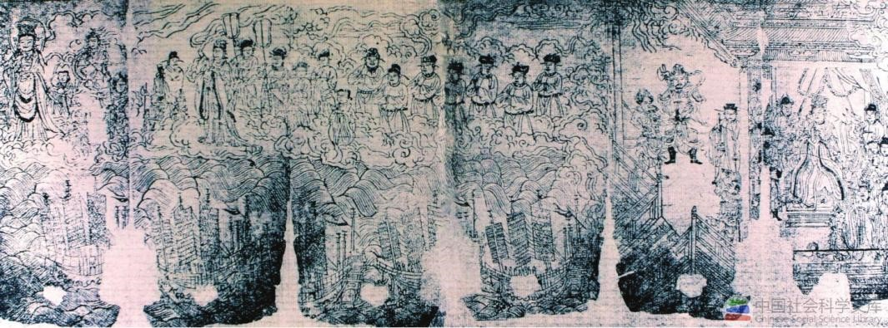
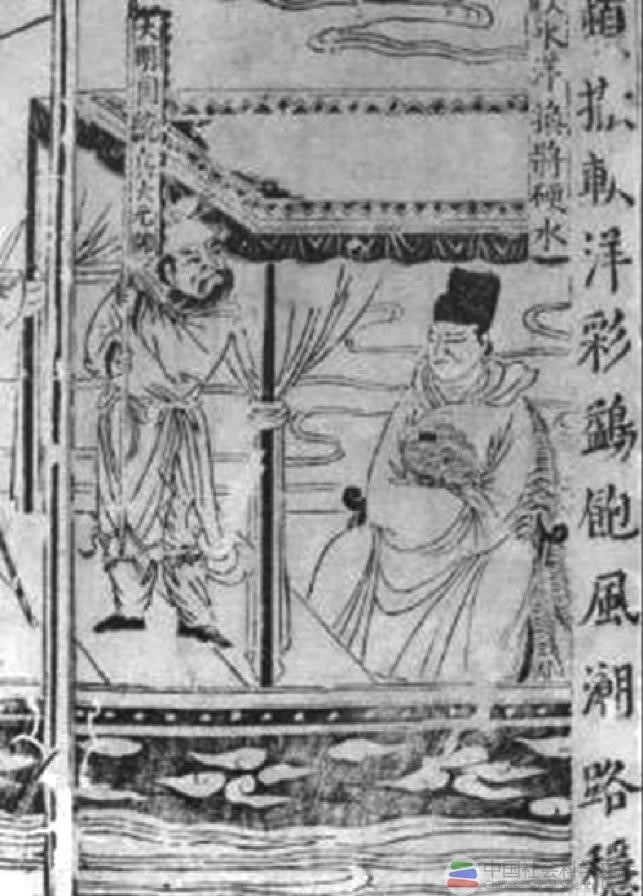
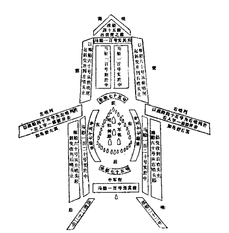

（一）郑和的家世与生平
郑和，是我国历史上伟大的航海家，也是世界航海史上杰出的先驱者。他原姓马，名和，小字三保（或作三宝），明洪武四年（1371年）生于云南昆阳和代村。 全家笃信伊斯兰教，曾祖名拜颜，祖与父均名哈只，为伊斯兰教巡礼人。马哈只青年时，普长途跋涉去天方（今沙特阿拉伯的麦加）朝觐，富于航海冒险精神。 马和“自幼有才志”，生长在舟帆掩映的滇池边，又深受父辈影响，从小壮志凌云，非同常人。洪武十四年(1381年)九月，朱元章遺大将傅友德、蓝玉与冰英“帅步骑三十万征云南”。 次年战事结束。马哈只在战乱中去世，马和被明军虏阉，拨至朱元璋第四子燕王朱棣的藩邸中充任小太监。在燕王府中，马和忍辱负重，成长起来。因他“丰躯伟貌”， “博辨机敏”，“谦恭谨密，不避劳勒”，故渐为朱棣赏识。
公元1398年，朱元璋死，由长孙朱允炆继位，史称建文帝。1399年，统治集团内部矛盾激化，朱棣兴师“靖难”，发动兵变。 马和从燕王起兵，“出入战阵，多建奇功”。1402年6月，朱棣攻破南京，夺得帝位，史称明成祖。因马和攘助有力，朱棣擢之为内官监太监，并御书“郑”姓。 从此，马和改名为郑和，史称“三保太监”（或“三宝太监”）。
郑和近待官中，“有智略，知兵习战”，世奉伊斯兰教，又皈依佛门，终于被明成祖遴选为出使西祥船队的主要组织者与指挥者，成为中国历史上彪炳千秋的航海英雄。 从永乐三年(1405年)至宣德六年(1431年)，郑和先后七下西祥，其航行之雄伟壮丽与艰苦卓绝，正如《天妃灵应之纪》碑中所刻：“涉沧溟十万余里。 观夫海祥，洪涛接天，巨浪如山：视诸夷域，迥隔于烟霞缥渺之间；而我之云帆高张，昼夜星驰，涉彼狂澜，若履通衢。”
宣德八年(1433年)三月，郑和在第七次下西洋的返航途中，“卒于古里国（今印度卡利卡特）”，归葬牛首山。 清同治《上江两县志》载：“牛首山有郑基，永乐中命下西洋，宣德初复命，卒于古里，赐葬山麓。”一代航海巨星郑和殒落在他乡异域， 这种为中国航海事业鞠躬尽瘁、死而后己的献身精神，是“国史之光”，值得后人永远敬仰和学习。
明《天妃经》卷首郑和下西洋插图原图
罗懋登《三宝太监西洋记通俗演义》中的插图
（二）郑和船队
为胜任“耀兵异域，示中国富强”与“宣德化而柔远人”的外交使命，抗衡大洋上的惊涛骇浪，郑和组建了当时世界上最庞大的远洋船队，其主要特点是： 船员众多，建制完整；船舶巨大，种类齐全：编队严密，通讯捷便。
1.船员众多，建制完整
郑和船队下西洋的全体船员人数相当众多。据载，第一次为27800余人，第三次为27000余人，第四次为27670人，第七次为27550人。其余几次阙录，但估计也在27000人左右。
郑和船队阵容，据《郑和家谱》所载，大致如下：“钦差正使太监七员，副使监丞十员，少监十员，内监五十三员，都指挥二员，指挥九十三员， 千户一百零四员，百户一百零三员，舍人二名，户部郎中一员，鸿胪寺序班二员，阴阳官一员，阴阳生四名，医官、医生一百八十员，旗校、勇士、力士、军力、余丁、民稍、买办、 书手共二万六千八百零三员，以上共二万七千四百一十一员名”。另据祝允明在《前闻记》中所述，最后一次下西洋有：“官校、旗军、火长、舵工、班碇手、通事、书算手、 医士、铁锚、木轮、搭材等匠，水手、民稍人等，共二万七千五百五十员名。”
由此可知，郑和船队中各类航海人员相当齐全，建制也十分完整，按其在整个航行中的地位与作用，基本上可分为首脑决策、航海业务、外交贸易、后勤总务与军事护航等五大部分。
根据《三宝太监西洋记通俗演义》记载的郑和船队图
2.船舶巨大、种类齐全
郑和下西洋，每次都有大、小海船200余艘，是一支结构精良、种类齐全的特混船队。在海洋上航行时，“维绡挂席，际天而行”，蔚为壮观。
在郑和船队中的大型海船叫宝船。据载，其“大者长四十四丈四尺(约151.8米)，阔一十八丈(约61.6米)”；有九桅，张十帆：“篷、帆、锚、舵，非二三百人莫能举动”， 堪称明代造船家的惊世杰作。除宝船外，郑和船队中尚有马船，其长三十七丈，宽十五丈，有八桅：粮船，长二十八丈，宽十二丈，有七榄：坐船，其长二十四丈， 宽九丈四尺，有六栀；战船，长十八丈，宽六丈八尺，有五桅。此外，还有“水船”之类的辅助性船只。
3.编队严密，通讯捷便
郑和船队的编队，就总体而论，有大与分之分。大腙者，即全体船舶编队；分者，即抽出一部分船舶编队。这种大腙与分腙的编队，可分可合，机动灵活，使郑和船队能在必要时分赴各地，以完成各别的航行任务。
为了保证编队整齐，进退有致，实施有效的指挥与调度，建立捷便的海上通讯联络是不可缺少的。据《西洋记》称，郑和船队之通讯联络方式是：“昼行认旗帜，夜行认灯笼， 务在前后相继，左右相挽，不致疏虞”。如遇到阴雨迷雾天气，海上能见度差，则改以音响信号进行通讯联络。即使在平时天气良好时，船舶的前进、后退、举炊休息、集合、起锚、 扯篷、升帆、抛泊、转向等，也可藉各种音响信号统一指挥。